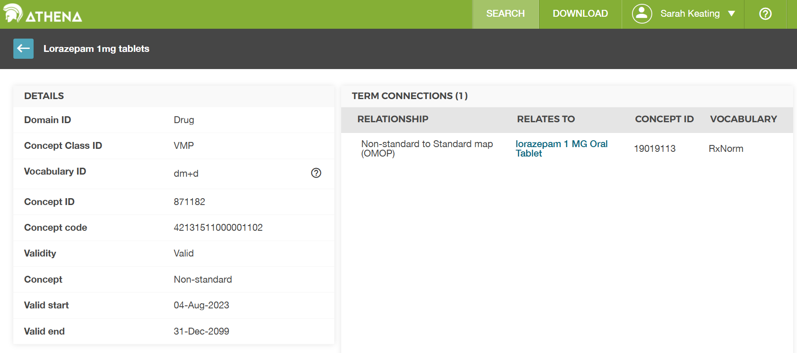
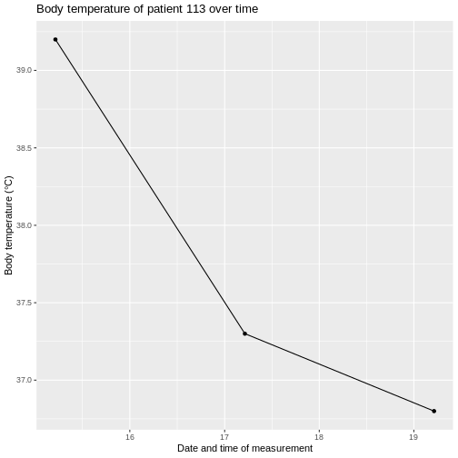
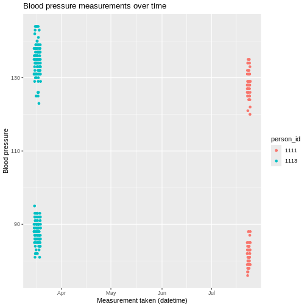

Content from What is OMOP?
Last updated on 2026-04-14 | Edit this page
Estimated time: 0 minutes
Overview
Questions
- What is OMOP?
- Why is using a standard important in healthcare data?
- How do OMOP tables relate to each other?
- What are concept_ids and how can we get an humanly readable name for them?
Objectives
- Examine the diagram of the OMOP tables and the data specification
- Understand OMOP standardization and vocabularies
- Connect to an OMOP database and explore the
concepttable - Get a humanly readable name for a concept_id
Setting up R
Getting started
The “Projects” interface in RStudio not only creates a working directory for you, but also remembers its location (allowing you to quickly navigate to it). The interface also (optionally) preserves custom settings and open files to make it easier to resume work after a break.
Connect to a database
For this episode we will be using the CDMConnector
package to connect to an OMOP Common Data Model database. We define a
function that will open this package and connect an appropriate dataset.
It is listed below but you will also find it in the
workshop/code/CDMConnector directory that you should have
downloaded. This package also contains synthetic example data that can
be used to demonstrate querying the data.
R
library(dplyr)
# Connect to GiBleed if not already connected
if (!exists("cdm") || !inherits(cdm, "cdm_reference")) {
db_name <- "GiBleed"
CDMConnector::requireEunomia(datasetName = db_name)
con <- DBI::dbConnect(duckdb::duckdb(),
dbdir = CDMConnector::eunomiaDir(datasetName = db_name))
cdm <- CDMConnector::cdmFromCon(con, cdmSchema = "main", writeSchema = "main")
}
OUTPUT
Download completed!Make sure everyone - has R open - has a project - has managed to connect to the database
Introduction
OMOP is a format for recording Electronic Healthcare Records. It allows you to follow a patient journey through a hospital by linking every aspect to a standard vocabulary thus enabling easy sharing of data between hospitals, trusts and even countries.
OMOP CDM Diagram

OMOP CDM stands for the Observational Medical Outcomes Partnership Common Data Model. You don’t really need to remember what OMOP stands for. Remembering that CDM stands for Common Data Model can help you remember that it is a data standard that can be applied to different data sources to create data in a Common (same) format. The table diagram will look confusing to start with but you can use data in the OMOP CDM without needing to understand (or populate) all 37 tables.
Challenge
Look at the OMOP-CDM figure and answer the following questions:
Which table is the key to all the other tables?
Which table allows you to distinguish between different stays in hospital?
The Person table
The Visit_occurrence table
Why use OMOP?

Once a database has been converted to the OMOP CDM, evidence can be generated using standardized analytics tools. This means that different tools can also be shared and reused. So using OMOP can help make your research FAIR.
Check that everyone knows what FAIR stands for
Read in the database as above.
The data themselves are not actually read into the created cdm object. Rather it is a reference that allows us to query the data from the database.
Typing names(cdm) will give a summary of the tables in
the database and we can look at these individually using the
$ operator and the colnames command.
OMOP Tables
R
names(cdm)
OUTPUT
[1] "person" "observation_period" "visit_occurrence"
[4] "visit_detail" "condition_occurrence" "drug_exposure"
[7] "procedure_occurrence" "device_exposure" "measurement"
[10] "observation" "death" "note"
[13] "note_nlp" "specimen" "fact_relationship"
[16] "location" "care_site" "provider"
[19] "payer_plan_period" "cost" "drug_era"
[22] "dose_era" "condition_era" "metadata"
[25] "cdm_source" "concept" "vocabulary"
[28] "domain" "concept_class" "concept_relationship"
[31] "relationship" "concept_synonym" "concept_ancestor"
[34] "source_to_concept_map" "drug_strength" Looking at the column names in each table
R
colnames(cdm$person)
OUTPUT
[1] "person_id" "gender_concept_id"
[3] "year_of_birth" "month_of_birth"
[5] "day_of_birth" "birth_datetime"
[7] "race_concept_id" "ethnicity_concept_id"
[9] "location_id" "provider_id"
[11] "care_site_id" "person_source_value"
[13] "gender_source_value" "gender_source_concept_id"
[15] "race_source_value" "race_source_concept_id"
[17] "ethnicity_source_value" "ethnicity_source_concept_id"Challenge
How do you think the visit_occurrence table is used to
connect to the person table?
R
colnames(cdm$visit_occurrence)
OUTPUT
[1] "visit_occurrence_id" "person_id"
[3] "visit_concept_id" "visit_start_date"
[5] "visit_start_datetime" "visit_end_date"
[7] "visit_end_datetime" "visit_type_concept_id"
[9] "provider_id" "care_site_id"
[11] "visit_source_value" "visit_source_concept_id"
[13] "admitting_source_concept_id" "admitting_source_value"
[15] "discharge_to_concept_id" "discharge_to_source_value"
[17] "preceding_visit_occurrence_id"Looking at both tables we can see that they both have a column
labelled person_id which could be used to link them
together.
Notice that the visit_concept_id column in the
visit_occurrence table is also a concept_id. This
concept_id can be used to find out more information about the type of
visit (e.g. inpatient, outpatient etc) by looking it up in the
concept table. In this case the
visit_concept_id is 9201 which relates to an inpatient
visit. We can find this out by filtering the concept table
for concept_id 9201 and selecting the
concept_name column.
R
cdm$concept |>
filter(concept_id == 9201) |>
select(concept_name)
OUTPUT
# Source: SQL [?? x 1]
# Database: DuckDB 1.4.1 [unknown@Linux 6.8.0-1044-azure:R 4.5.3//tmp/RtmpH4q1Ti/file268a555f1452.duckdb]
concept_name
<chr>
1 Inpatient VisitCODING_NOTE: We use filter to identify
the row(s) we want and select to choose the column(s) we
want. These are functions from the dplyr package that can make code
clearer by chaining instructions together and can be used for a local R
object or database connection. If we were working with a local R object
we could use also base R code:
cdm$concept$concept_name[cdm$concept$concept_id == 9201] to
get the same result - however this would command would not work with a
database connection.
A useful function
Finding the humanly readable name for a concept_id will
be a useful function. We can create a function
get_concept_name() that takes the ‘cdm’ object and a
concept_id as an input and returns the
concept_name.
Challenge
Create the function get_concept_name() that takes the
‘cdm’ object and a concept_id as an input and returns the
concept_name.
R
get_concept_name <- function(cdm_obj, id) {
cdm_obj$concept |>
filter(concept_id == id) |>
select(concept_name) |>
pull()
}
Explanation of function code
- The function is called
get_concept_nameand it takes two arguments,cdm_objandid. - Inside the function, we query the
concepttable from thecdm_objobject. - We use the
filterfunction to select rows where theconcept_idmatches the inputid. - We then use
selectto choose only theconcept_namecolumn from the filtered results. - Finally, we use
pull()to extract theconcept_nameas a vector, which is returned by the function. We need to use this because we are querying a remote database, not one that is local.
- Using a standard makes it much easier to share data
- OMOP uses concepts to link different tables together
- The
concepttable contains humanly readable names for concept_ids
Content from Exploring OMOP concepts with R
Last updated on 2026-04-14 | Edit this page
Estimated time: 0 minutes
Overview
Questions
- Find the
vocabulary,domainandconcept_classfor a givenconcept_id - Establish whether a
concept_idis a standard concept - Find all concepts within a given domain
- Find all concepts within a given vocabulary
Objectives
- Understand that concepts have additional attributes such as vocabulary, domain, classand standard concept status
- Use R to query the
concepttable for specific attributes of concepts - Filter concepts based on domain, vocabulary and class
- Identify standard concepts within the OMOP vocabulary
Introduction
The primary purpose of the concept table is to provide a
standardised representation of medical Concepts, allowing for consistent
querying and analysis across healthcare databases. Users can join the
concept table with other tables in the CDM to enrich
clinical data with Concept information or use the concept
table as a reference for mapping clinical data from source terminologies
to Standard or other Concepts.
An OMOP concept_id is a unique integer identifier. These
are defined in the OMOP concept table with a corresponding
name and other attributes. OMOP contains concept_ids for other medical
vocabularies such as SNOMED and LOINC, which OMOP terms as source
vocabularies.
Nearly everything in a hospital can be represented by an OMOP
concept_id.
Looking up OMOP concepts
OMOP concepts can be looked up in Athena an online tool provided by OHDSI (Observational Health Data Sciences and Informatics, a collaboration that continues to develop OMOP).
The CDMConnector package allows connection to an OMOP Common Data Model in a database. It also contains synthetic example data that can be used to demonstrate querying the data.
In the previous episode we set up the CDMConnector package to connect
to an OMOP Common Data Model database and used it to look at the
concepts table. We also created the function
get_concept_name() to get a humanly readable name for a
concept_id. We will use these again in this episode.
Setting up the connection
R
library(CDMConnector)
library(dplyr)
db_name <- "GiBleed"
CDMConnector::requireEunomia(datasetName = db_name)
db <- DBI::dbConnect(duckdb::duckdb(),
dbdir = CDMConnector::eunomiaDir(datasetName = db_name))
cdm <- CDMConnector::cdmFromCon(con = db, cdmSchema = "main",
writeSchema = "main")
Exploring the concept table
R
colnames(cdm$concept)
OUTPUT
[1] "concept_id" "concept_name" "domain_id" "vocabulary_id"
[5] "concept_class_id" "standard_concept" "concept_code" "valid_start_date"
[9] "valid_end_date" "invalid_reason" The concept table contains the following columns:
| Column Names | Description of content |
|---|---|
| concept_id | Unique identifier for the concept. |
| concept_name | Name or description of the concept. |
| domain_id | The domain to which the concept belongs (e.g. Condition, Drug). |
| vocabulary_id | The vocabulary from which the concept originates (e.g. SNOMED, RxNorm). |
| concept_class_id | Classification within the vocabulary (e.g. Clinical Finding, Ingredient). |
| standard_concept | ‘S’ for standard concepts that come from internationally accepted standard vocabularies. |
| concept_code | Code used by the source vocabulary to identify the concept. |
| valid_start_date | Date the concept became valid in OMOP. |
| valid_end_date | Date the concept ceased to be valid. |
| invalid_reason | Reason for invalidation, if applicable. |
The concept table is the main table for looking up
information about concepts. We can use R to query the
concept table for specific attributes of concepts.
Challenge
Answer the following questions using R and the concept
table:
How many entries are there in the
concepttable?How many distinct vocabularies are there in the
concepttable?How many distinct domains other than ‘None’ are there in the
concepttable?How many distinct concept_classes are there in the
concepttable?
- How many entries are there in the
concepttable?
R
cdm$concept |>
summarise(n_concepts = n()) |>
collect()
OUTPUT
# A tibble: 1 × 1
n_concepts
<dbl>
1 444Answer: There are 444 entries in the
concept table. This is a tiny fraction of the overall table
which can be found at Athena
CODING_NOTE: The function n() counts
the number of rows in the table and summarise() creates a
summary table with that count. These functions are part of the
dplyr package. When you have loaded the library once your
environment will remember it for the rest of the session. We are also
using collect at the end of the pipe to ensure that the
data is converted to a local object in R. You can get away without using
it at this stage, as R works out that you are getting a single value,
but you will often need to use collect with database
connections.
- How many distinct vocabularies are there in the
concepttable?
R
cdm$concept |>
summarise(n_distinct_vocabularies = n_distinct(vocabulary_id)) |>
collect()
OUTPUT
# A tibble: 1 × 1
n_distinct_vocabularies
<dbl>
1 9Answer: There are 9 distinct vocabularies used in this dataset.
CODING_NOTE: The function n_distinct(x)
counts the number of distinct values in the column x.
- How many distinct domains other than ‘None’ are there in the
concepttable?
R
cdm$concept |>
filter(domain_id != "None") |>
summarise(n_distinct_domains = n_distinct(domain_id)) |>
collect()
OUTPUT
# A tibble: 1 × 1
n_distinct_domains
<dbl>
1 8Answer: There are 8 distinct domains other than ‘None’ in this dataset.
CODING_NOTE: We use the filter()
function to filter out rows where the domain_id is ‘None’ before
counting the distinct domains.
- How many distinct concept_classes are there in the
concepttable?
R
cdm$concept |>
summarise(n_distinct_concept_classes = n_distinct(concept_class_id)) |>
collect()
OUTPUT
# A tibble: 1 × 1
n_distinct_concept_classes
<dbl>
1 21Answer: There are 21 distinct concept_classes used in this dataset.
Filtering concepts by domain, vocabulary, class and standard concept status
Let’s look into filtering concepts based on their domain, vocabulary, concept_class and standard_concept status.
Challenge
List the first ten rows of the concept table, ordered by
concept_id. List only the concept_id,
domain_id, vocabulary_id,
concept_class_id and standard_concept
columns.
R
cdm$concept |>
arrange(concept_id) |>
filter(row_number() <= 10) |>
select(concept_id,
domain_id,
vocabulary_id,
concept_class_id,
standard_concept) |>
collect()
OUTPUT
# A tibble: 10 × 5
concept_id domain_id vocabulary_id concept_class_id standard_concept
<int> <chr> <chr> <chr> <chr>
1 0 Metadata None Undefined <NA>
2 8507 Gender Gender Gender S
3 8532 Gender Gender Gender S
4 9201 Visit Visit Visit S
5 9202 Visit Visit Visit S
6 9203 Visit Visit Visit S
7 28060 Condition SNOMED Clinical Finding S
8 30753 Condition SNOMED Clinical Finding S
9 78272 Condition SNOMED Clinical Finding S
10 80180 Condition SNOMED Clinical Finding S CODING_NOTE: The arrange() function
orders the rows by concept_id. The
filter(row_number() <= 10) function filters to the first
10 rows. The select() function selects only the specified
columns. We have to use collect() to pull the data into R
memory to view it. This is because we are querying a remote database,
rather than a local object. In the previous challenge R would figure out
that it should display the calculated result, but here we need to be
explicit.
Look at vocabularies
Vocabulary: The source or system of coding for concepts, such as SNOMED, RxNorm, LOINC, or ICD‑10. OMOP maps many vocabularies into a common, standardised set so different coding systems can be analysed together.
Challenge
List all distinct vocabularies in the concept table.
R
cdm$concept |>
filter(!is.na(vocabulary_id)) |>
distinct(vocabulary_id) |>
arrange(vocabulary_id) |>
pull(vocabulary_id)
OUTPUT
[1] "Gender" "RxNorm" "CVX" "SNOMED" "None" "ICD10CM" "LOINC"
[8] "NDC" "Visit" CODING_NOTE: Here we can use pull(x) to
pull the data x into R memory to view it. This is because we are only
requiring one column of data, so we can pull that column directly into R
memory without needing to use collect() first.
Look at domains
Domain: A high‑level category that groups concepts by what they represent in clinical data, such as Condition, Drug, Procedure, Measurement, or Observation. A concept’s domain determines which OMOP table it belongs to and how it’s used analytically.
Challenge
List all distinct domains in the concept table.
R
cdm$concept |>
filter(!is.na(domain_id)) |>
distinct(domain_id) |>
arrange(domain_id) |>
pull(domain_id)
OUTPUT
[1] "Drug" "Measurement" "Observation" "Visit" "Metadata"
[6] "Gender" "Condition" "Procedure" Look at concept classes
Class: A more detailed category that groups concepts within a domain by what they represent in clinical data.
Challenge
List all distinct concept_classes in the concept table
that are in the “Drug” domain.
R
cdm$concept |>
filter(domain_id == "Drug") |>
filter(!is.na(concept_class_id)) |>
distinct(concept_class_id) |>
arrange(concept_class_id) |>
pull(concept_class_id)
OUTPUT
[1] "CVX" "Ingredient" "11-digit NDC"
[4] "Branded Pack" "Clinical Drug Comp" "Branded Drug"
[7] "Quant Branded Drug" "Branded Drug Comp" "Clinical Drug"
[10] "Quant Clinical Drug"Look at non standard concepts
A standard concept is the preferred, harmonised code in OMOP that
represents a clinical idea across vocabularies. Standard concepts
(standard_concept = “S”) are the target of mappings from source codes,
and they define which domain and table the data belong to for consistent
analysis. However, OMOP also include nonstandard concepts from sources
that are not globally used but maybe useful locally. dm+d,
the NHS Dictionary of Medicines and Devices is one such vocabulary that
is included in OMOP but is not a standard vocabulary.
Challenge
Find any nonstandard concepts (i.e. concepts where standard_concept
is not ‘S’) by filtering the concept table. List the first 10
concept_ids of nonstandard concepts. Then look up their
concept_name, domain_id, vocabulary_id and standard_concept status.
R
cdm$concept |>
filter(is.na(standard_concept) | standard_concept != "S") |>
slice_min(order_by = concept_id, n = 10, with_ties = FALSE) |>
pull(concept_id)
OUTPUT
[1] 0 1569708 35208414 44923712 45011828Answer: There are only four nonstandard concepts in this dataset: 1569708, 35208414, 44923712, 45011828.
CODING_NOTE: We use slice_min() to get
the first 10 rows which match the filter, ordered by
concept_id.
R
cdm$concept |>
filter(concept_id %in% c(1569708, 35208414, 44923712, 45011828)) |>
select(concept_id,
concept_name,
domain_id,
vocabulary_id,
standard_concept) |>
collect()
OUTPUT
# A tibble: 4 × 5
concept_id concept_name domain_id vocabulary_id standard_concept
<int> <chr> <chr> <chr> <chr>
1 35208414 Gastrointestinal hemorrha… Condition ICD10CM <NA>
2 44923712 celecoxib 200 MG Oral Cap… Drug NDC <NA>
3 1569708 Other diseases of digesti… Condition ICD10CM <NA>
4 45011828 Diclofenac Sodium 75 MG D… Drug NDC <NA> CODING_NOTE: We use %in% to filter for
multiple concept_ids which we can list in a vector.
Now you should be able to replicate our get_concept_name() function to look up other attributes of concepts such as domain, vocabulary and standard concept status.
Challenge
Find the domain,vocabulary and concept class for
concept_id 35208414
Is this concept a standard concept?
R
get_concept_domain <- function(cdm_obj, id) {
cdm_obj$concept |>
filter(concept_id == id) |>
select(domain_id) |>
pull()
}
get_concept_vocabulary <- function(cdm_obj, id) {
cdm_obj$concept |>
filter(concept_id == id) |>
select(vocabulary_id) |>
pull()
}
get_concept_concept_class <- function(cdm_obj, id) {
cdm_obj$concept |>
filter(concept_id == id) |>
select(concept_class_id) |>
pull()
}
get_concept_standard_status <- function(cdm_obj, id) {
cdm_obj$concept |>
filter(concept_id == id) |>
select(standard_concept) |>
pull()
}
get_concept_domain(cdm, 35208414)
OUTPUT
[1] "Condition"R
get_concept_vocabulary(cdm, 35208414)
OUTPUT
[1] "ICD10CM"R
get_concept_concept_class(cdm, 35208414)
OUTPUT
[1] "4-char billing code"R
get_concept_standard_status(cdm, 35208414)
OUTPUT
[1] NAAnswer:
- The domain for
concept_id319835 is ‘Condition’. - The vocabulary for
concept_id319835 is ‘ICD10CM’. - The concept class for concept id 319835 is ‘4-char billing code’
- This concept is not a standard concept (standard_concept = ‘NA’).
- Concepts have additional attributes such as vocabulary, domain, and standard concept status
- The
concepttable can be queried using R to retrieve specific attributes of concepts - Concepts can be filtered based on their domain, vocabulary and class
- Standard concepts are those that are recommended for use in analyses within the OMOP framework
Content from Parquet files
Last updated on 2026-04-14 | Edit this page
Estimated time: 0 minutes
Overview
Questions
What is a parquet file?
How to explore and open parquet files in R?
Objectives
Understand the structure of parquet files.
Learn how to read parquet files in R.
Introduction
In this episode, we will explore parquet files, a popular file format for storing large datasets efficiently. We will learn how to read parquet files in R and understand their structure.
For this episode we will be using a sample OMOP CDM database that is pre-loaded with data. This database is a simplified version of a real-world OMOP CDM database and is intended for educational purposes only.
(UCLH only) This will come in a similar form as you would get data if you asked for a data extract via the SAFEHR platform (i.e. a set of parquet files).
As part of the setup prior to this course you were asked to download
and install the sample dataset. If you have not done this yet, please
refer to the setup instructions. For now, we
will assume that you have the sample OMOP CDM dataset available on your
local machine at the following path: ./data/omop/ and the
functions in a folder ./code/parquet_dataset.
Parquet files
Parquet is a columnar storage file format that is optimized for use with big data processing frameworks. It is designed to be efficient in terms of both storage space and read/write performance. Parquet files are often used in data warehousing and big data analytics applications.
Exploring Parquet files
We have provided a function that will allow you to browse the
structure of the data in the same way as we did with the database in the
previous episode. This code is available below or in the downloaded
workshop/code/open_omop_dataset.R file. You can source this
file to load the function into your R environment.
R
open_omop_dataset <- function(path) {
# iterate over table level directories
list.dirs(path, recursive = FALSE) |>
# exclude folder name from path and use it as index for named list
purrr::set_names(~ basename(.)) |>
# "lazy-load" list of parquet files from specified folder
purrr::map(arrow::open_dataset)
}
CODING_NOTE: This function uses the
arrow package to read in the parquet files. The
open_dataset() function from the arrow package
allows us to read in the parquet files without having to load the entire
dataset into memory. This is particularly useful when working with large
datasets. The function is reasonably complex but it is designed to be
flexible and work with any OMOP CDM dataset that is structured in the
same way as the one we are using for this course. It will read in all
the parquet files in the specified directory and create a nested list
structure that allows us to easily access the different tables in the
dataset. We leave it to you to explore the code and understand how it
works.
Now we can use this function to open the sample OMOP CDM dataset
located in the workshop/data/omop/ directory and explore it
in the same way as we did with the database in the previous episode.
R
omop <- open_omop_dataset("./data/omop")
Note that the path to the data directory may be different depending on where you have stored the sample OMOP CDM dataset on your local machine.
Check the people have used the right path. Their environment should now have an entry under Data reading ‘omop List of 8’
Explore the data using the following:
R
omop
OUTPUT
$concept
FileSystemDataset with 1 Parquet file
10 columns
concept_id: int32
concept_name: string
domain_id: string
vocabulary_id: string
standard_concept: string
concept_class_id: string
concept_code: string
valid_start_date: date32[day]
valid_end_date: date32[day]
invalid_reason: string
$concept_relationship
FileSystemDataset with 1 Parquet file
6 columns
concept_id_1: int32
concept_id_2: int32
relationship_id: string
valid_start_date: date32[day]
valid_end_date: date32[day]
invalid_reason: string
$condition_occurrence
FileSystemDataset with 1 Parquet file
10 columns
condition_occurrence_id: int32
person_id: int32
condition_concept_id: int32
condition_start_date: date32[day]
condition_end_date: date32[day]
condition_type_concept_id: int32
condition_status_concept_id: int32
visit_occurrence_id: int32
condition_source_value: string
condition_source_concept_id: int32
$drug_exposure
FileSystemDataset with 1 Parquet file
12 columns
drug_exposure_id: int32
person_id: int32
drug_concept_id: int32
drug_exposure_start_date: date32[day]
drug_exposure_start_datetime: timestamp[us, tz=UTC]
drug_exposure_end_date: date32[day]
drug_exposure_end_datetime: timestamp[us, tz=UTC]
drug_type_concept_id: int32
quantity: double
route_concept_id: int32
visit_occurrence_id: int32
drug_source_concept_id: int32
$drug_strength
FileSystemDataset with 1 Parquet file
12 columns
drug_concept_id: int32
ingredient_concept_id: int32
amount_value: double
amount_unit_concept_id: int32
numerator_value: double
numerator_unit_concept_id: int32
denominator_value: double
denominator_unit_concept_id: int32
box_size: double
valid_start_date: date32[day]
valid_end_date: date32[day]
invalid_reason: string
$measurement
FileSystemDataset with 1 Parquet file
12 columns
measurement_id: double
person_id: int32
measurement_concept_id: int32
measurement_date: date32[day]
measurement_datetime: timestamp[us, tz=UTC]
operator_concept_id: double
value_as_number: double
value_as_concept_id: double
unit_concept_id: double
range_low: double
range_high: double
visit_occurrence_id: int32
$observation
FileSystemDataset with 1 Parquet file
9 columns
observation_id: int32
person_id: int32
observation_concept_id: int32
observation_date: date32[day]
observation_datetime: timestamp[us, tz=UTC]
value_as_number: int32
value_as_string: string
value_as_concept_id: int32
visit_occurrence_id: int32
$person
FileSystemDataset with 1 Parquet file
8 columns
person_id: int32
gender_concept_id: int32
year_of_birth: int32
month_of_birth: int32
day_of_birth: int32
race_concept_id: int32
gender_source_value: string
race_source_value: string
$procedure_occurrence
FileSystemDataset with 1 Parquet file
7 columns
procedure_occurrence_id: int32
person_id: int32
procedure_concept_id: int32
procedure_date: date32[day]
procedure_datetime: timestamp[us, tz=UTC]
procedure_type_concept_id: int32
visit_occurrence_id: int32
$visit_occurrence
FileSystemDataset with 1 Parquet file
10 columns
visit_occurrence_id: int32
person_id: int32
visit_concept_id: int32
visit_start_date: date32[day]
visit_start_datetime: timestamp[us, tz=UTC]
visit_end_date: date32[day]
visit_end_datetime: timestamp[us, tz=UTC]
visit_type_concept_id: int32
discharged_to_concept_id: int32
preceding_visit_occurrence_id: int32You will see that this gives you a list of all the tables in this dataset and what columns they contain. It is obviously a much smaller dataset! You can explore individual tables which will also give you the column names and the data type of the entry.
R
omop$person
OUTPUT
FileSystemDataset with 1 Parquet file
8 columns
person_id: int32
gender_concept_id: int32
year_of_birth: int32
month_of_birth: int32
day_of_birth: int32
race_concept_id: int32
gender_source_value: string
race_source_value: stringTo actually open each table we can use
R
library(dplyr)
person <- omop$person |>
collect()
person
OUTPUT
# A tibble: 8 × 8
person_id gender_concept_id year_of_birth month_of_birth day_of_birth
<int> <int> <int> <int> <int>
1 1111 8507 1993 6 15
2 1112 8532 1970 6 15
3 1113 8507 1983 6 15
4 34567 8532 2015 6 15
5 78901 8532 1989 6 15
6 31 8532 1987 0 0
7 2 8532 2008 0 0
8 58 8507 1985 0 0
# ℹ 3 more variables: race_concept_id <int>, gender_source_value <chr>,
# race_source_value <chr>CODING_NOTE: The collect() function is
used to actually read the data from the parquet files into memory. This
is necessary because the open_dataset() function creates a
reference to the data rather than loading it into memory. By using
collect(), we can work with the data as a regular data
frame in R.
Or we can use the specific functions from the arrow
package to read in the parquet files directly.
R
library(arrow)
person <- read_parquet("./data/omop/person/part-0.parquet")
person
OUTPUT
# A tibble: 8 × 8
person_id gender_concept_id year_of_birth month_of_birth day_of_birth
<int> <int> <int> <int> <int>
1 1111 8507 1993 6 15
2 1112 8532 1970 6 15
3 1113 8507 1983 6 15
4 34567 8532 2015 6 15
5 78901 8532 1989 6 15
6 31 8532 1987 0 0
7 2 8532 2008 0 0
8 58 8507 1985 0 0
# ℹ 3 more variables: race_concept_id <int>, gender_source_value <chr>,
# race_source_value <chr>CODING_NOTE: The read_parquet()
function from the arrow package allows us to read in a
specific parquet file directly into R. This can be useful if we only
want to work with a specific table from the dataset and do not need any
of the other files.
Check that everyone has been able to read in the person table and see the data.
Points worth a discussion:
the day and month of birth
gender_source_value and race_source_value are given for some rows but not others
As part of the privacy preserving policies around health data, dates of birth are often de-identified to only show the year of birth. This is why in this dataset the day and month of birth are set to 15/6 or 0/0 for all individuals.
You can also see that in some cases the gender_source_value and race_source_value columns are populated while in others they are not. This depends on the policy of the individual hospital. Note: the data in this dataset is a number of different sources combined together to form a single OMOP CDM database.
Challenge
Adapt the code we had developed for the get_concept_name function in the previous episode to work with this parquet file dataset.
R
get_concept_name <- function(omop_obj, id) {
omop_obj$concept |>
filter(concept_id == id) |>
select(concept_name) |>
collect()
}
CODING_NOTE: The get_concept_name()
function is adapted to work with the parquet file dataset. It uses the
filter() and select() functions from the
dplyr package to query the concept table in
the parquet dataset. The collect() function is used to read
the result into memory so that we can work with it as a regular data
frame in R.
Now we can use this function to look up concept names by their concept_id.
R
get_concept_name(omop, 8507)
OUTPUT
# A tibble: 1 × 1
concept_name
<chr>
1 Male Answer: The concept_id 8507 corresponds to the concept “Male”.
Parquet files are a columnar storage file format optimized for big data processing.
The
arrowpackage in R can be used to read and manipulate parquet files.
Content from More on concepts
Last updated on 2026-04-14 | Edit this page
Estimated time: 0 minutes
Overview
Questions
Where to find other concept_ids in OMOP
How to link OMOP tables
Objectives
Understand that there are many other concept_ids in OMOP tables and that these are usually named with a _concept_id suffix.
Learn how to link OMOP tables using common identifiers such as person_id and visit_occurrence_id.
Be able to use the concept table to look up humanly readable names for various concept_ids.
Use joins to combine data from multiple OMOP tables based on common identifiers.
Introduction
In this episode, we will explore more concepts related to the OMOP Common Data Model (CDM). We will focus on understanding how different tables in the OMOP CDM are linked together through common identifiers. This knowledge is crucial for effectively querying and analysing healthcare data stored in the OMOP format.
For this episode we will be using a sample OMOP CDM database that is pre-loaded with data. This database is a simplified version of a real-world OMOP CDM database and is intended for educational purposes only.
(UCLH only) This will come in a similar form as you would get data if you asked for a data extract via the SAFEHR platform (i.e. a set of parquet files).
As part of the setup prior to this course you were asked to download
and install the sample dataset. If you have not done this yet, please
refer to the setup instructions. For now, we
will assume that you have the sample OMOP CDM dataset available on your
local machine at the following path: ./data/omop/ and the
functions in a folder ./code/parquet_dataset.
You will then need to load the database as shown in the previous episode.
R
library(dplyr)
open_omop_dataset <- function(path) {
# iterate over table level directories
list.dirs(path, recursive = FALSE) |>
# exclude folder name from path and use it as index for named list
purrr::set_names(~ basename(.)) |>
# "lazy-load" list of parquet files from specified folder
purrr::map(arrow::open_dataset)
}
R
omop <- open_omop_dataset("./data/omop")
and the useful function we created in the previous episode to look up concept names.
R
get_concept_name <- function(omop_obj, id) {
omop_obj$concept |>
filter(concept_id == id) |>
select(concept_name) |>
collect()
}
Other concept_ids in OMOP
In addition to the concept_id column in various OMOP
tables, there are several other columns that use *_concept_id to provide
information.
The person table contains the following columns (among
others not listed here):
| Column Names | Description of content |
|---|---|
| person_id | Unique identifier for each person |
| gender_concept_id | Concept identifier for the sex of the person |
| year_of_birth | Year of birth of the person |
| month_of_birth | Month of birth of the person |
| day_of_birth | Day of birth of the person |
| race_concept_id | Concept identifier for the race/ethnic background of the person |
| gender_source_value | Source value for the sex of the person |
| race_source_value | Source value for the race/ethnic background of the person |
Look at the column names of the person table.
R
omop$person
OUTPUT
FileSystemDataset with 1 Parquet file
8 columns
person_id: int32
gender_concept_id: int32
year_of_birth: int32
month_of_birth: int32
day_of_birth: int32
race_concept_id: int32
gender_source_value: string
race_source_value: stringSeveral of these columns end with _concept_id, such as
gender_concept_id and race_concept_id. These
columns link to the concept table to provide humanly
readable names for the concepts represented by these IDs.
For example, to get the gender name for a person, you can use the
gender_concept_id column in the person table
and look it up in the concept table.
R
# First read in the person table
person <- omop$person |>
collect()
From this we can see that the gender_concept_id can have
values 8507 or 8532. We can look these
up in the concept table using the previously defined
function get_concept_name().
R
get_concept_name(omop, 8507)
OUTPUT
# A tibble: 1 × 1
concept_name
<chr>
1 Male R
get_concept_name(omop, 8532)
OUTPUT
# A tibble: 1 × 1
concept_name
<chr>
1 Female It might also be useful to look up id values from the names. We can
create a function get_concept_id() that takes a
concept_name as input and returns the concept_id.
Challenge
Create the function get_concept_id() that takes an
omop_obj and a concept_name as input and
returns the concept_id.
R
get_concept_id <- function(omop_obj, name) {
omop_obj$concept |>
filter(concept_name == name) |>
select(concept_id) |>
collect()
}
Check that this works by looking up the concept_id for “Female”.
R
get_concept_id(omop, "Female")
OUTPUT
# A tibble: 1 × 1
concept_id
<int>
1 8532Answer: The concept_id for “Female” is 8532.
Challenge
Using the person table and the functions
get_concept_name() and get_concept_id() that
we have defined, answer the following questions:
What is the gender of the
Whitepatient in thepersontable?What is the gender of the
White Britishpatient in thepersontable?How many men and women are in the person table?
- First we need to know the
concept_idof the conceptWhite
R
get_concept_id(omop, "White")
OUTPUT
# A tibble: 1 × 1
concept_id
<int>
1 8527Then we need to know which patient has this race_concept_id and what the corresponding gender_concept_id is for this patient.
R
white <- person |>
filter(race_concept_id == 8527)
get_concept_name(omop, white$gender_concept_id)
OUTPUT
# A tibble: 1 × 1
concept_name
<chr>
1 Female Answer: The White patient is female. (Note
the code above assumes there is only one White
patient.)
- Similarly, we first need to know the
concept_idof the conceptWhite British
R
get_concept_id(omop, "White British")
OUTPUT
# A tibble: 1 × 1
concept_id
<int>
1 46286810Then we need to know which patient has this race_concept_id and what the corresponding gender_concept_id is for this patient.
R
white_british <- person |>
filter(race_concept_id == 46286810)
get_concept_name(omop, white_british$gender_concept_id)
OUTPUT
# A tibble: 1 × 1
concept_name
<chr>
1 Female Answer: The White British patient is
female. (Note the code above assumes there is only one
White British patient.)
- The table is small enough to actually count by hand but also we can
use the R package
dplyrto count the number of men and women.
R
# Let's create a mini version of the concept table that contains only the concepts(the gender concepts) and the columns(concept_id, concept_name) we want
gender_concept <- omop$concept |>
filter(concept_id %in% c(8507, 8532)) |>
select(concept_id, concept_name) |>
collect()
# Now we can join to get the number of people of each gender
person |>
inner_join(gender_concept, by = join_by(gender_concept_id == concept_id)) |>
group_by(concept_name) |>
summarise(count = n())
OUTPUT
# A tibble: 2 × 2
concept_name count
<chr> <int>
1 Female 5
2 Male 3CODING_NOTE: The inner_join function is
used to combine the person table with the gender_concept table we
created, based on the gender_concept_id. This allows us to get the
humanly readable gender names.
Linking OMOP tables
In the previous episode, we saw how to look up concept names using concept_ids. In this episode, we will explore how different OMOP tables are linked together using common identifiers.
For example, the visit_occurrence table contains a
person_id column that links to the person
table. This allows us to retrieve information about the person
associated with a particular visit.
R
omop$visit_occurrence
OUTPUT
FileSystemDataset with 1 Parquet file
10 columns
visit_occurrence_id: int32
person_id: int32
visit_concept_id: int32
visit_start_date: date32[day]
visit_start_datetime: timestamp[us, tz=UTC]
visit_end_date: date32[day]
visit_end_datetime: timestamp[us, tz=UTC]
visit_type_concept_id: int32
discharged_to_concept_id: int32
preceding_visit_occurrence_id: int32R
omop$person
OUTPUT
FileSystemDataset with 1 Parquet file
8 columns
person_id: int32
gender_concept_id: int32
year_of_birth: int32
month_of_birth: int32
day_of_birth: int32
race_concept_id: int32
gender_source_value: string
race_source_value: stringChallenge
Using the person and visit_occurrence
tables, answer the following questions:
- How many visits are recorded for each person in the
visit_occurrencetable
- We can count the number of visits for each person by grouping the
visit_occurrencetable byperson_idand counting the number of occurrences.
R
visit_counts <- omop$visit_occurrence |>
group_by(person_id) |>
summarise(visit_count = n()) |>
collect()
visit_counts
OUTPUT
# A tibble: 8 × 2
person_id visit_count
<int> <int>
1 1111 1
2 1112 2
3 1113 1
4 78901 1
5 34567 1
6 31 2
7 2 2
8 58 10CODING_NOTE: The group_by() function is
used to group the data by person_id, and the
summarise function is used to count the number of visits
for each person. The collect() function is used to retrieve
the results from the remote database.
We can use functions from dplyr to join tables together by these links. For instance, we can find all of the visits for Female patients.
R
female_patients <- omop$person |>
filter(gender_concept_id == 8532)
female_visits <- female_patients |>
inner_join(omop$visit_occurrence, by = join_by(person_id)) |>
select(person_id, visit_occurrence_id, visit_start_date, visit_end_date) |>
collect()
female_visits
OUTPUT
# A tibble: 8 × 4
person_id visit_occurrence_id visit_start_date visit_end_date
<int> <int> <date> <date>
1 1112 1102 2025-12-24 NA
2 1112 1002 2024-01-15 2024-01-29
3 34567 55667 2025-12-18 2025-12-18
4 78901 44556 2004-09-15 2004-09-18
5 31 37923 2024-07-23 2024-07-23
6 31 1222 2019-05-10 2019-05-10
7 2 1798 2025-05-16 2025-05-19
8 2 154 2025-06-12 2025-06-12 CODING_NOTE: We have used the
inner_join method to only keep rows where both tables have
the same ids, but there are others. We also used the
join_by function which allows us to define which column to
join on, you can choose multiple columns in a join.
Challenge
Using the person and visit_occurrence
tables, answer the following questions:
- How many visits did each person make, and show that person’s race as a name.
- How many visits were there for men and women?
- We already have visit counts from the previous solution, and we need to join in the person’s race, and then join in the names for that race concept.
R
# Using the same logic as the previous example
visit_counts <- omop$visit_occurrence |>
group_by(person_id) |>
summarise(visit_count = n())
visit_counts_with_race <- visit_counts |>
inner_join(omop$person, by = join_by(person_id)) |>
inner_join(omop$concept, by = join_by(race_concept_id == concept_id)) |>
rename(race_name = concept_name) |>
select(person_id, visit_count, race_name) |>
collect()
visit_counts_with_race
OUTPUT
# A tibble: 8 × 3
person_id visit_count race_name
<int> <int> <chr>
1 1111 1 Black
2 1112 2 White
3 1113 1 Asian
4 78901 1 Asian
5 34567 1 Asian
6 31 2 White British
7 2 2 Ethnicity not stated
8 58 10 Ethnicity not statedCODING_NOTE: The rename function allows
us to change the name of a column, so that it makes more sense in the
final output.
- We use joins to get the gender of each person before summarising by their gender concept. Optionally, we can also join in the concept table
R
# Using the same logic as the previous example
counts_by_gender_concept <- omop$person |>
inner_join(omop$visit_occurrence, by = join_by(person_id)) |>
group_by(gender_concept_id) |>
summarise(visit_count = n())
# we can also join in the concept name to make it human readable
counts_by_gender_concept |>
inner_join(omop$concept, by = join_by(gender_concept_id == concept_id)) |>
rename(gender = concept_name) |>
select(gender, visit_count) |>
collect()
OUTPUT
# A tibble: 2 × 2
gender visit_count
<chr> <int>
1 Male 12
2 Female 8OMOP tables contain many concept_ids, usually named with a _concept_id suffix.
The concept table can be used to look up humanly readable names for various concept_ids.
OMOP tables can be linked using common identifier.
Content from Measurements and Observations
Last updated on 2026-04-14 | Edit this page
Estimated time: 0 minutes
Overview
Questions
What are the differences between measurements and observations?
How to find out what measurements and observations have been recorded for a particular person?
How to find the values of measurements and observations and associated information such as units?
Objectives
Know that measurements are mainly lab results and other records like pulse rate
Know observations are other facts obtained through questioning or direct observation
Understand concept ids identify the measure or observation, values are stored in
value_as_number,value_as_concept_id, or (for observation table only )value_as_string.Be able to join to the concept table to find a particular measurement or observation concept by name
Introduction
This episode covers the OMOP measurement and observation tables.
For this episode we will be using a sample OMOP CDM database that is pre-loaded with data. This database is a simplified version of a real-world OMOP CDM database and is intended for educational purposes only.
(UCLH only) This will come in a similar form as you would get data if you asked for a data extract via the SAFEHR platform (i.e. a set of parquet files).
As part of the setup prior to this course you were asked to download
and install the sample dataset. If you have not done this yet, please
refer to the setup instructions. For now, we
will assume that you have the sample OMOP CDM dataset available on your
local machine at the following path: ./data/omop/ and the
functions in a folder ./code/parquet_dataset.
You will then need to load the database as shown in the previous episode.
R
open_omop_dataset <- function(path) {
# iterate over table level directories
list.dirs(path, recursive = FALSE) |>
# exclude folder name from path and use it as index for named list
purrr::set_names(~ basename(.)) |>
# "lazy-load" list of parquet files from specified folder
purrr::map(arrow::open_dataset)
}
R
omop <- open_omop_dataset("./data/omop")
and the useful functions we created in the previous episode to look up concept names/ids.
R
library(dplyr)
get_concept_name <- function(omop_obj, id) {
omop_obj$concept |>
filter(concept_id == id) |>
select(concept_name) |>
collect()
}
R
get_concept_id <- function(omop_obj, name) {
omop_obj$concept |>
filter(concept_name == name) |>
select(concept_id) |>
collect()
}
The OMOP measurement and observation tables contain information collected about a person.
The difference between them is that measurement contains numerical or categorical values collected by a standardised process, whereas observation contains less standardised clinical facts. Measurements are often lab results, vital signs or other clinical measurements such as height, weight, blood pressure, pulse rate, respiratory rate, oxygen saturations etc. Observations are other facts obtained through questioning or direct observation, for example smoking status, alcohol intake, family history, symptoms reported by the patient etc.
A person can have multiple measurements and observations. Some columns are similar between measurement and observation.
Concepts and values
Data are stored as questions and answers. A question
(e.g. Pulse rate) is defined by a concept_id and the answer
is stored in a value column.
The measurement table contains the following columns
(among others not listed here):
| Column Names | Description of content |
|---|---|
| measurement_id | Unique identifier for each measurement |
| person_id | Identifier for the patient |
| measurement_concept_id | Concept identifier for the measurement |
| measurement_date | Date the measurement was taken |
| measurement_datetime | Date and time the measurement was taken |
| operator_concept_id | Concept identifier for the operator (e.g. less than, greater than) used in the measurement value comparison if applicable |
| value_as_number | The numeric value of the measurement |
| value_as_concept_id | Concept identifier for the categorical value of the measurement |
| unit_concept_id | Concept identifier for the unit of measurement |
| range_low | The low end of the normal range for the measurement |
| range_high | The high end of the normal range for the measurement |
| visit_occurrence_id | Identifier for the visit during which the measurement was taken |
The observation table contains the following columns
(among others not listed here):
| Column Names | Description of content |
|---|---|
| observation_id | Unique identifier for each observation |
| person_id | Identifier for the patient |
| observation_concept_id | Concept identifier for the observation |
| observation_date | Date the observation was made |
| observation_datetime | Date and time the observation was made |
| value_as_number | The numeric value of the observation |
| value_as_string | The string value of the observation |
| value_as_concept_id | Concept identifier for the categorical value of the observation |
| visit_occurrence_id | Identifier for the visit during which the observation was made |
The measurement_concept_id or observation_concept_id columns define what has been recorded. Here are some examples :
| Example Measurement concepts | Example Observation concepts |
|---|---|
| Respiratory rate | Respiratory function |
| Pulse rate | Wound dressing observable |
| Hemoglobin saturation with oxygen | Mandatory breath rate |
| Body temperature | Body position for blood pressure measurement |
| Diastolic blood pressure | Alcohol intake - finding |
| Arterial oxygen saturation | Tobacco smoking behavior - finding |
| Body weight | Vomit appearance |
| Leukocytes [#/volume] in Blood | State of consciousness and awareness |
Look at the column values we have got in the tables associated with our database.
R
print("measurement column names:")
OUTPUT
[1] "measurement column names:"R
omop$measurement |>
colnames()
OUTPUT
[1] "measurement_id" "person_id" "measurement_concept_id"
[4] "measurement_date" "measurement_datetime" "operator_concept_id"
[7] "value_as_number" "value_as_concept_id" "unit_concept_id"
[10] "range_low" "range_high" "visit_occurrence_id" R
print("measurement column names:")
OUTPUT
[1] "measurement column names:"R
observation <- omop$observation |>
colnames()
observation
OUTPUT
[1] "observation_id" "person_id" "observation_concept_id"
[4] "observation_date" "observation_datetime" "value_as_number"
[7] "value_as_string" "value_as_concept_id" "visit_occurrence_id" CODING_NOTE: The colnames() function is
used to get the column names of the measurement and observation tables.
The print() function is used to print a label before the
column names for clarity. The column names are then printed to the
console, as the default behaviour when you don’t assign an output to a
variable.
In the case of the observation table, we assign the column names to a
variable observation and then print it. This is just to
demonstrate that you can assign the column names to a variable if you
want to use them later in your code.
Challenge
Looking at the measurement and observation
tables identify the various columns that might store a value and columns
which help you make sense of what a value might mean.
The various value columns store values :
| column name | data type | example | concept_name |
|---|---|---|---|
value_as_number |
numeric value | 1.2 | - |
unit_concept_id |
units of the numeric value | 9529 | kilogram |
value_as_concept_id |
categorical value | 4328749 | High |
operator_concept_id |
optional operators | 4172704 | > |
Note where values are a concept_id, the name of that
concept can be looked up in the concept table that is part
of the OMOP vocabularies and included in most CDM instances.
You can see from the column names within the tables that for an
observation the value can be a string, a number or a
concept, whereas for a measurement the value can be a
number accompanied by a unit concept or the value can be a concept.
Looking at observation values
Let’s focus on observations.
We could go through each table and use our
get_concept_name function to work out what all these
measurements and observations are, but that could get a bit tedious!
Let’s try and join to the concept table and produce a table that gives us the humanly readable names to start with.
Challenge
By joining to the concept table produce a version of the observation table with concept names. Only include columns that are relevant to the value.
R
# Pre-load concept names and ids
concepts <- omop$concept |>
select(concept_id, concept_name) |>
collect()
# Create a mini observation table with only the columns relevant to value
mini_observation <- omop$observation |>
select(observation_id, person_id, observation_concept_id, value_as_concept_id, value_as_number) |>
collect()
# Join to get names of the observation concept id
# Rename the new column to observation_concept_name
# Relocate the new column to be after observation_concept_id
mini_observation <- mini_observation |>
inner_join(concepts, by=join_by(observation_concept_id == concept_id)) |>
rename(observation_concept_name = concept_name) |>
relocate(observation_concept_name, .after = observation_concept_id)
# Repeat the join to get names of the value concept id
mini_observation <- mini_observation |>
left_join(concepts, by = join_by(value_as_concept_id == concept_id)) |>
rename(value_as_concept_name = concept_name) |>
relocate(value_as_concept_name, .after = value_as_concept_id)
CODING_NOTE: In the above code we first read in the
concept table and use select to get only the
concept_id and concept_name columns to create
a smaller table of concepts. Remember that we use collect()
to bring the data into memory. Then we create a mini version of the
observation table that only contains the columns relevant to the value.
We then use inner_join to join this mini observation table
to the smaller concepts table joining on the
observation_concept_id to get the name of the observation
concept. We use rename to rename this new column to
observation_concept_name and relocate to move
it to be after the observation_concept_id column. We then
repeat this process to join to the concepts table by the
value_as_concept_id to get the name of the value concept,
rename it to value_as_concept_name and relocate it to be
after the value_as_concept_id column. We could have done
this in one step by joining to the concept table twice in the same code
chunk, but we have done it in two steps so that you can inspect it
midway. The process is the same whether you join to the concept table
once or twice, you just need to specify the correct join condition and
rename the new columns appropriately.
Now we can look at this named table.
R
tibble::view(mini_observation)
mini_observation
OUTPUT
# A tibble: 30 × 7
observation_id person_id observation_concept_id observation_concept_name
<int> <int> <int> <chr>
1 6001 1111 4160001 Clinical finding present
2 6002 1111 4203130 Discharge from hospital
3 6003 1112 4138933 Admission to intensive care …
4 6004 1112 45772969 On ventilator
5 6005 1112 4203130 Discharge from hospital
6 6006 1112 4103640 Amputated foot
7 6007 1112 4160001 Clinical finding present
8 6008 1113 4024958 Throat culture
9 6009 1113 4232313 Microbial identification kit…
10 6010 1113 4160001 Clinical finding present
# ℹ 20 more rows
# ℹ 3 more variables: value_as_concept_id <int>, value_as_concept_name <chr>,
# value_as_number <int>CODING_NOTE: The tibble::view()
function is used to open the mini_observation data frame in
a spreadsheet-like viewer in RStudio. This allows us to easily explore
the data and see the humanly readable names for the observation concepts
and value concepts. it is more readable than using print()
or simply typing the name of the data frame in the console, especially
if the data frame has many rows and columns.
Social indexes
Could be skipped if short of time
It is interesting to note that some observations relate to social indexes such as deprivation indices. As noted in the title these are observations made in England only.
Challenge
Create a mini version of the concepts table that contains only the concepts relating to social indices. These concepts are those with concept_id 35812888, 35812884, 35812883, 35812882, 35812883, 35812885.
R
social_concepts <- omop$concept |>
filter(concept_id %in% c(35812888, 35812884, 35812883, 35812882, 35812883, 35812885)) |>
collect()
social_concepts
OUTPUT
# A tibble: 5 × 10
concept_id concept_name domain_id vocabulary_id standard_concept
<int> <chr> <chr> <chr> <chr>
1 35812882 Index of Multiple Depriva… Observat… UK Biobank ""
2 35812883 Income score (England) Observat… UK Biobank ""
3 35812884 Employment score (England) Observat… UK Biobank ""
4 35812885 Health score (England) Observat… UK Biobank ""
5 35812888 Crime score (England) Observat… UK Biobank ""
# ℹ 5 more variables: concept_class_id <chr>, concept_code <chr>,
# valid_start_date <date>, valid_end_date <date>, invalid_reason <chr>CODING_NOTE: We use %in% to
filter on each concept_id in the list given.
The collect() function is then used to bring this filtered
data into memory so that we can work with it as a regular data frame in
R. We then display the resulting table of social concepts by simply
typing the name of the data frame social_concepts.
This is an instance of a nonstandard concept being used within OMOP.
Comment on the fact that these concepts are nonstandard and that this is an example of how local data can be mapped to OMOP concepts even if they are not part of the standard vocabulary.
Looking at measurement values
Let’s now look at measurements. As we said before, measurements are often numerical values with associated units. This can arise from lab results or vital signs.
Challenge
Consider the concept with the name Heart rate. Use the
measurement and concept tables to answer the
following question:
What are the units associated with this measurement concept?
What is the average value recorded for this measurement across all persons?
What class of concept is this measurement concept?
- What are the units associated with
Heart rate?
R
# Get the concept id for Heart rate
heart_rate_id <- get_concept_id(omop, "Heart rate") |>
pull(concept_id)
heart_rate_id
OUTPUT
[1] 3027018R
# Filter measurement table for this concept id
heart_rate_measurements <- omop$measurement |>
filter(measurement_concept_id == heart_rate_id)
heart_rate_units <- heart_rate_measurements |>
distinct(unit_concept_id) |>
pull()
get_concept_name(omop, heart_rate_units)
OUTPUT
# A tibble: 1 × 1
concept_name
<chr>
1 per minute Answer: The units associated with the
Heart rate measurement concept are
per minute.
CODING_NOTE: We first use the
get_concept_id() function to get the concept_id for “Heart
rate”. We then filter the measurement table for rows where
the measurement_concept_id matches this concept_id. We then
use distinct() to get the unique unit concept ids
associated with these heart rate measurements, and then
collect() to bring it into memory. Finally, we use our
get_concept_name() function to look up the names of these
unit concepts. Note that we use the variable heart_rate_id
to store the id so that we can use it in subsequent code.
- What is the average value recorded for
Heart rateacross all persons?
R
average_heart_rate <- heart_rate_measurements |>
collect() |>
summarise(heart_rate = mean(value_as_number, na.rm = TRUE)
)
average_heart_rate
OUTPUT
# A tibble: 1 × 1
heart_rate
<dbl>
1 95Answer: The average value recorded for the
Heart rate measurement concept across all persons is 95
beats per minute.
CODING_NOTE: Here we are using dplyr’s
summarise() function to apply a function to the entire
dataframe. We use the mean() function to calculate the
average of the value_as_number column in the
heart_rate_measurements data frame. We set
na.rm = TRUE to ignore any missing values when calculating
the mean.
- Get the class of concept for
Heart rate
R
heart_rate_class <- omop$concept |>
filter(concept_id == heart_rate_id) |>
select(concept_class_id) |>
collect()
heart_rate_class
OUTPUT
# A tibble: 1 × 1
concept_class_id
<chr>
1 Clinical ObservationAnswer: The class of concept for
Heart rate is Clinical Observation.
CODING_NOTE: We filter the concept
table for the row where the concept_id matches the
heart_rate_id. We then select the
concept_class_id column to get the class of concept.
Finally, we use collect() to bring this data into memory
and display it.
You may have noticed that one of the column names in the
measurement table is operator_concept_id. This
column is used to store optional operators that can be used to indicate
whether a measurement value is greater than, less
than, equal to etc. a certain value. For example, if a
measurement value is recorded as “> 10”, the
value_as_number column would contain the number 10 and the
operator_concept_id column would contain the concept id for
the “greater than” operator. This allows us to capture measurements that
are recorded in this way while still being able to work with the numeric
value in the value_as_number column.
Challenge
Create a version of the measurement table containing
columns: measurement_id,
measurement_concept_id, operator_concept_id,
value_as_number, range_low and
range_high for person_id = 31, leaving out
any rows where operator_concept_id is 0. Now
add a column for the names of the measurement and operator concepts.
Using this reduced measurement table to list the
measurements made for this person.
What range should the C reactive protein measurement for this person fall within?
R
# Create a mini version of the measurement table for person_id 31
mini_measurement <- omop$measurement |>
filter(
person_id == 31,
!is.na(operator_concept_id) & operator_concept_id != 0
) |>
select(measurement_id, measurement_concept_id, operator_concept_id, value_as_number, range_low, range_high) |>
collect()
# Join to get names of the measurement concept id
mini_measurement <- mini_measurement |>
left_join(concepts, by = join_by(measurement_concept_id == concept_id)) |>
rename(measurement_concept_name = concept_name) |>
relocate(measurement_concept_name, .after = measurement_concept_id)
# Join to get names of the operator concept id
mini_measurement <- mini_measurement |>
left_join(concepts, by = join_by(operator_concept_id == concept_id)) |>
rename(operator_concept_name = concept_name) |>
relocate(operator_concept_name, .after = operator_concept_id)
tibble::view(mini_measurement)
mini_measurement
OUTPUT
# A tibble: 6 × 8
measurement_id measurement_concept_id measurement_concept_name
<dbl> <int> <chr>
1 351796 4301868 Pulse rate
2 351800 4313591 Respiratory rate
3 354289 4011919 Hemoglobin saturation with oxygen
4 354292 44810247 LACE (length of stay, acuity of automat…
5 354293 3020460 C reactive protein [Mass/volume] in Ser…
6 354294 46236952 Glomerular filtration rate [Volume Rate…
# ℹ 5 more variables: operator_concept_id <dbl>, operator_concept_name <chr>,
# value_as_number <dbl>, range_low <dbl>, range_high <dbl>Answer: The measurements made for person_id 31 are: Pulse rate = 61 Respiratory rate = 16 Hemoglobin saturation with oxygen = 100 LACE = 4 C reactive protein [Mass/volume] in Serum or Plasma < 0.6 Glomerular filtration rate > 90
The C reactive protein measurement for this person should fall within the range 0 - 5 mg/L.
CODING_NOTE: We first filter the
measurement table for rows where person_id is
31 and operator_concept_id is filled and not
0, and select only the relevant columns. We then use
collect() to bring this data into memory. We then join to
the concepts table to get the names of the measurement
concepts and operator concepts, renaming the new columns appropriately
and relocating them for better readability. Finally, we display the
resulting mini_measurement data frame which contains the
measurements made for person_id 31 along with the names of the
measurement and operator concepts.
We leave it as an exercise for the student to look up the units of each measurement.
There is also a column called value_as_concept_id which
can be used to store categorical values for measurements. For example,
if a measurement is recorded as “High”, the
value_as_concept_id column would contain the
concept_id for “High”. This allows us to capture
measurements that are recorded in this way while still being able to
work with the categorical value in the value_as_concept_id
column.
Challenge
Using the measurement table, find all measurements that
have a value recorded in the value_as_concept_id column and
join to the concept table to get the names of these measurements and
values. Display only the unique set of measurement concept names and
value concept names.
R
categorical_measurements <- omop$measurement |>
filter(!is.na(value_as_concept_id) & value_as_concept_id != 0) |>
select(measurement_id, measurement_concept_id, value_as_concept_id)
# Join to get names of the measurement concept id
categorical_measurements <- categorical_measurements |>
left_join(concepts, by = join_by(measurement_concept_id == concept_id)) |>
rename(measurement_concept_name = concept_name) |>
relocate(measurement_concept_name, .after = measurement_concept_id)
# Join to get names of the value concept id
categorical_measurements <- categorical_measurements |>
inner_join(concepts, by = join_by(value_as_concept_id == concept_id)) |>
rename(value_as_concept_name = concept_name) |>
relocate(value_as_concept_name, .after = value_as_concept_id)
# Get unique set of measurement concept names and value concept names
categorical_measurements <- categorical_measurements |>
select(measurement_concept_name, value_as_concept_name) |>
distinct() |>
collect()
ERROR
Error in `compute.arrow_dplyr_query()` at arrow/R/dplyr-collect.R:22:3:
! Invalid: Incompatible data types for corresponding join field keys: FieldRef.Name(value_as_concept_id) of type double and FieldRef.Name(concept_id) of type int32R
tibble::view(categorical_measurements)
categorical_measurements
OUTPUT
FileSystemDataset (query)
measurement_id: double
measurement_concept_id: int32
measurement_concept_name: string
value_as_concept_id: double
value_as_concept_name: string
See $.data for the source Arrow objectAnswer: The resulting
categorical_measurements data frame contains all
measurements that have a categorical value recorded along with the names
of the measurement and value concepts.
CODING_NOTE: We first filter the
measurement table for rows where
value_as_concept_id is not missing, and select only the
relevant columns. We then join to the concepts table to get
the names of the measurement concepts and value concepts, renaming the
new columns appropriately and relocating them for better readability.
The we then select only the measurement concept name and value concept
name columns, and remove duplicates using distinct().
Finally, we display the resulting categorical_measurements
data frame which contains all measurements that have a unique
categorical value recorded along with the names of the measurement and
value concepts. We delay using collect() to as late as
possible, so that we only bring things into memory when needed.
- Measurements are mainly lab results and other clinical measurement records like pulse rate
- Observations are other facts obtained through questioning or direct observation
- Concept ids identify the measure or observation and values are
stored in
value_as_numberorvalue_as_concept_id - We can join to the concept table to find a particular measurement or observation concept by name
Content from Conditions and Visits
Last updated on 2026-04-14 | Edit this page
Estimated time: 0 minutes
Overview
Questions
What are conditions in the OMOP CDM?
When do we need to consider visits in our analysis?
Objectives
Understand the structure and purpose of the conditions table in the OMOP CDM.
Know that visits are recorded in the visit_occurrence table.
Learn how and when to consider visits in data analysis.
Know that a visit is a period of time and patients can have multiple visits.
Understand that multiple measurements, conditions etc. can occur within a visit.
Understand that other tables link to visits.
Introduction
This episode covers the OMOP conditions and visits table.
For this episode we will be using a sample OMOP CDM database that is pre-loaded with data. This database is a simplified version of a real-world OMOP CDM database and is intended for educational purposes only.
(UCLH only) This will come in a similar form as you would get data if you asked for a data extract via the SAFEHR platform (i.e. a set of parquet files).
As part of the setup prior to this course you were asked to download
and install the sample dataset. If you have not done this yet, please
refer to the setup instructions. For now, we
will assume that you have the sample OMOP CDM dataset available on your
local machine at the following path: ./data/omop/ and the
functions in a folder ./code/parquet_dataset.
You will then need to load the database as shown in the previous episode.
R
library(dplyr)
open_omop_dataset <- function(path) {
# iterate over table level directories
list.dirs(path, recursive = FALSE) |>
# exclude folder name from path and use it as index for named list
purrr::set_names(~ basename(.)) |>
# "lazy-load" list of parquet files from specified folder
purrr::map(arrow::open_dataset)
}
R
omop <- open_omop_dataset("./data/omop")
and the useful functions we created in the previous episode to look up concept names and ids.
R
get_concept_name <- function(omop_obj, id) {
omop_obj$concept |>
filter(concept_id == id) |>
select(concept_name) |>
collect()
}
R
get_concept_id <- function(omop_obj, name) {
omop_obj$concept |>
filter(concept_name == name) |>
select(concept_id) |>
collect()
}
Conditions
Conditions
are a key part of the OMOP CDM. They represent diagnoses that have been
made for patients. Conditions are stored in the
condition_occurrence table. Each record in this table
represents a single occurrence of a condition for a patient. The table
contains records of diseases, medical conditions, diagnoses, signs, or
symptoms observed by providers or reported by patients. Conditions are
mapped from diagnostic codes and represented using standardized concepts
in a hierarchical structure.
The condition_occurrence table contains the following
columns (among others not listed here):
| Column Names | Description of content |
|---|---|
| condition_occurrence_id | Unique identifier for each condition occurrence |
| person_id | Identifier for the patient |
| condition_concept_id | Concept identifier for the condition |
| condition_start_date | Date the condition started |
| condition_end_date | Date the condition ended |
| condition_type_concept_id | Concept identifier for the type of condition occurrence |
| condition_status_concept_id | Concept identifier for the status of the condition occurrence |
| visit_occurrence_id | Identifier for the visit during which the condition was recorded |
| condition_source_value | Original value from the source data |
| condition_source_concept_id | Concept identifier for the source value |
Challenge
How many records are there in the
condition_occurrencetable?List any of the conditions that occur more than once in the table along with their humanly readable names.
Choose one patient and list all the conditions they have and when they started?
- How many records are there in the
condition_occurrencetable?
R
omop$condition_occurrence |>
tally() |>
collect()
OUTPUT
# A tibble: 1 × 1
n
<int>
1 35Answer: There are 35 records in the
condition_occurrence table.
CODING NOTE: The tally() function is
used to count the number of records in the table. It is more efficient
to use tally() directly on the database without collecting
the data into R, as this allows the database to perform the counting
operation, which is optimized for large datasets. We then use
collect() to run the calculation and produce the output. In
place of tally() we could have used count(),
which is a convenience function to group by a column and then
tally(). We could have also used base R
nrow(omop$condition_occurrence) in this example.
- List any of the conditions that occur more than once in the table along with their humanly readable names.
R
omop$condition_occurrence |>
group_by(condition_concept_id) |>
summarise(occurrences = n()) |>
filter(occurrences > 1) |>
left_join(
omop$concept,
by = join_by(condition_concept_id == concept_id)
) |>
select(concept_name, occurrences) |>
collect()
OUTPUT
# A tibble: 4 × 2
concept_name occurrences
<chr> <int>
1 Injury of head 2
2 Inflammatory disorder of digestive tract 2
3 Gastritis 2
4 Hemorrhoids 2CODING NOTE: We first group the
condition_occurrence table by
condition_concept_id and count the number of occurrences
for each condition. We then filter to keep only those conditions that
occur more than once. Finally, we join with the concept
table to get the humanly readable names of the conditions and select the
relevant columns for display.
- Choose one patient and list all the conditions they have and when they started
R
patient_id <- 1111 # Replace with the desired person_id
omop$condition_occurrence |>
filter(person_id == patient_id) |>
left_join(
omop$concept,
by = join_by(condition_concept_id == concept_id)
) |>
select(condition_concept_id, concept_name, condition_start_date) |>
collect()
OUTPUT
# A tibble: 1 × 3
condition_concept_id concept_name condition_start_date
<int> <chr> <date>
1 4230399 Closed fracture of lateral malleolus 2025-07-22 CODING NOTE: We filter the
condition_occurrence table for the specified
person_id to get all conditions for that patient. We then
join with the concept table to get the humanly readable
names of the conditions and select the relevant columns for display.
Question three can be repeated for different patients by changing the
patient_id variable. You might be surprised to see that if
you choose patient 31 you will see that the entry for
their condition and start date is repeated. This isn’t an error!
Challenge
Investigate why patient 31 has repeated entries for
their condition and start date in the condition_occurrence
table. Look at the condition_type_concept_id,
conditions_status_concept_id, and
condition_source_value columns to understand the
differences between these entries.
R
patient_id <- 31
omop$condition_occurrence |>
filter(person_id == patient_id) |>
left_join(
omop$concept,
by = join_by(condition_concept_id == concept_id)
) |>
rename(condition_concept_name = concept_name) |>
relocate(condition_concept_name, .after = condition_concept_id) |>
left_join(
omop$concept,
by = join_by(condition_type_concept_id == concept_id)
) |>
rename(condition_type_concept_name = concept_name) |>
relocate(condition_type_concept_name, .after = condition_type_concept_id) |>
left_join(
omop$concept,
by = join_by(condition_status_concept_id == concept_id)
) |>
rename(condition_status_concept_name = concept_name) |>
relocate(condition_status_concept_name,
.after = condition_status_concept_id) |>
select(
condition_concept_id,
condition_concept_name,
condition_start_date,
condition_type_concept_id,
condition_type_concept_name,
condition_status_concept_id,
condition_status_concept_name,
condition_source_value
) |>
collect()
OUTPUT
# A tibble: 2 × 8
condition_concept_id condition_concept_name condition_start_date
<int> <chr> <date>
1 375415 Injury of head 2019-05-10
2 375415 Injury of head 2019-05-10
# ℹ 5 more variables: condition_type_concept_id <int>,
# condition_type_concept_name <chr>, condition_status_concept_id <int>,
# condition_status_concept_name <chr>, condition_source_value <chr>Answer: The output shows that for patient
31, the condition_concept_id and
condition_start_date are identical, but the
condition_type_concept_id and
condition_status_concept_id differ. This indicates that the
same condition was recorded in different contexts or with different
statuses, which explains the repeated entries in the
condition_occurrence table. This is commonly found in
hospital records!
CODING NOTE: We filter the
condition_occurrence table for person_id
31 and join with the concept table
multiple times to get the humanly readable names for the
condition_concept_id,
condition_type_concept_id, and
condition_status_concept_id. We then select and arrange the
relevant columns for display to understand the differences between the
entries for this patient.
Visits
The visit_occurrence table contains events
where each person engages with the healthcare system for a
duration of time.
The visit_occurrence table contains the following
columns (among others not listed here):
| Column Names | Description of content |
|---|---|
| visit_occurrence_id | Unique identifier for each visit occurrence |
| person_id | Identifier for the patient |
| visit_concept_id | Concept identifier for the type of visit |
| visit_start_date | Date the visit started |
| visit_start_datetime | Date and time the visit started |
| visit_end_date | Date the visit ended |
| visit_end_datetime | Date and time the visit ended |
| visit_type_concept_id | Concept identifier for the type of visit |
| discharged_to_concept_id | Concept identifier for where the patient was discharged to |
| preceding_visit_occurrence_id | Identifier for the previous visit occurrence |
The main clinical tables condition_occurrence,
measurement, observation and
drug_exposure contain a visit_occurrence_id
that links to this table.
visit_concept_id specifies the kind of visit that took
place using standardised OMOP concepts. These include
Inpatient visit, Emergency Room Visit and
Outpatient Visit. Inpatient visits can last for longer than
one day.
As we have seen we don’t need to consider visits to answer all research questions. For example if we can count the number of patients with a particular condition without considering visits. However, in some cases visits are important. For example, if we want to know how many emergency room visits resulted in a hospital admission we need to consider visits.
Challenge
Find out how many different types of visits are recorded in the
visit_occurrencetable and link these to get their name.Find patients who had more than one visit.
How many patients had both an emergency room visit and an inpatient visit?
- Find out how many different types of visits are recorded in the
visit_occurrencetable and link these to get their name.
R
omop$visit_occurrence |>
count(visit_concept_id) |>
left_join(
omop$concept,
by = join_by(visit_concept_id == concept_id)
) |>
select(visit_concept_id, concept_name, n) |>
arrange(desc(n)) |>
collect()
OUTPUT
# A tibble: 4 × 3
visit_concept_id concept_name n
<int> <chr> <int>
1 9203 Emergency Room Visit 8
2 9201 Inpatient Visit 7
3 9202 Outpatient Visit 4
4 262 Emergency Room and Inpatient Visit 1Answer: The different types of visits
recorded in the visit_occurrence table along with their
names are: - Emergency Room Visit - Inpatient visit - Outpatient Visit -
Emergency Room and Inpatient Visit
CODING NOTE: We use the count()
function to count the number of occurrences of each
visit_concept_id in the visit_occurrence
table. We then join with the concept table to get the
humanly readable names of the visit types and select the relevant
columns for display. Finally, we arrange the results in descending order
of count using the desc() function in conjunction with the
arrange() function.
- Find patients who had more than one visit.
R
omop$visit_occurrence |>
group_by(person_id) |>
tally() |>
filter(n > 1) |>
collect()
OUTPUT
# A tibble: 4 × 2
person_id n
<int> <int>
1 1112 2
2 31 2
3 2 2
4 58 10CODING NOTE: We group the
visit_occurrence table by person_id and use
tally() to count the number of visits for each patient. We
then filter to keep only those patients with an n greater
than 1 and collect the results into R for display. We could have also
used the summarise() function instead of
tally().
- How many patients had both an emergency room visit and an inpatient visit?
R
patients_with_both_in_one_visit <- omop$visit_occurrence |>
filter(visit_concept_id == 262) |>
count(person_id) |>
collect()
patients_with_both_visits_seperately <- omop$visit_occurrence |>
filter(visit_concept_id %in% c(9203, 9201)) |>
group_by(person_id) |>
summarise(visit_types = n_distinct(visit_concept_id)) |>
filter(visit_types == 2) |>
collect()
patients_with_both_in_one_visit |>
bind_rows(patients_with_both_visits_seperately) |>
distinct(person_id) |>
tally()
OUTPUT
# A tibble: 1 × 1
n
<int>
1 2Answer: The number of patients who had both an emergency room visit and an inpatient visit is 2.
CODING NOTE: We filter the
visit_occurrence table for the
visit_concept_id values corresponding to emergency room
visits and inpatient visit coded in a single concept. We then use
count(person_id) to find the total number of visits per
patient. For the next section we look at patients who have had separate
inpatient and emergency room visits by filtering the
visit_occurrence table for the
visit_concept_id for both concepts. We then group by
person_id and use summarise() to count the
number of distinct visit types for each patient. Finally, we count the
number of patients who had more than one distinct visit type to get the
number of patients who had both types of visits. Then we join together
both tables using bind_rows() and get the distinct patients
before counting the number of rows with tally().
Conditions are stored in the
condition_occurrencetable in the OMOP CDM.Visits are stored in the
visit_occurrencetable and linked to other clinical tables viavisit_occurrence_id.A visit represents a period of time during which a patient interacts with the healthcare system and there can be multiple types of visits.
Visits may be important to consider in analyses depending on the research question.
Content from Medications
Last updated on 2026-04-14 | Edit this page
Estimated time: 0 minutes
Overview
Questions
Where are medications stored ?
How do you trace the relationship between concepts from different vocabularies?
Objectives
Know that exposure of a patient to medications is stored in the
drug_exposuretableUnderstand that drug concepts can be at different levels of granularity
Understand that source values are mapped to a standard vocabulary
Understand how to access the concentration or strength of an exposure using the
drug_strengthtable
Introduction
This episode considers medications (the drug exposure table) in the OMOP Common Data Model (CDM).
For this episode we will be using a sample OMOP CDM database that is pre-loaded with data. This database is a simplified version of a real-world OMOP CDM database and is intended for educational purposes only.
(UCLH only) This will come in a similar form as you would get data if you asked for a data extract via the SAFEHR platform (i.e. a set of parquet files).
As part of the setup prior to this course you were asked to download
and install the sample dataset. If you have not done this yet, please
refer to the setup instructions. For now, we
will assume that you have the sample OMOP CDM dataset available on your
local machine at the following path: ./data/omop/ and the
functions in a folder ./code/parquet_dataset.
You will then need to load the database as shown in the previous episode.
R
library(dplyr)
open_omop_dataset <- function(path) {
# iterate over table level directories
list.dirs(path, recursive = FALSE) |>
# exclude folder name from path and use it as index for named list
purrr::set_names(~ basename(.)) |>
# "lazy-load" list of parquet files from specified folder
purrr::map(arrow::open_dataset)
}
R
omop <- open_omop_dataset("./data/omop")
and the useful functions we created in the previous episode to look up concept names and ids.
R
get_concept_name <- function(omop_obj, id) {
omop_obj$concept |>
filter(concept_id == id) |>
select(concept_name) |>
collect()
}
R
get_concept_id <- function(omop_obj, name) {
omop_obj$concept |>
filter(concept_name == name) |>
select(concept_id) |>
collect()
}
Drug exposure
The OMOP drug_exposure
table stores exposure of a patient to medications. The purpose of
records in this table is to indicate an exposure to a certain drug as
best as possible. In this context a drug is defined as an active
ingredient. Drug Exposures are defined by Concepts from the Drug domain,
which form a complex hierarchy. As a result, one
drug_source_concept_id may map to multiple standard
concept_ids if it is a combination product. Records in this
table represent prescriptions written, prescriptions dispensed, and
drugs administered by a provider to name a few. The
drug_type_concept_id can be used to find and filter on
these types. This table includes additional information about the drug
products, the quantity given, and route of administration.
The drug_exposure table contains the following columns
(among others not listed here):
| Column Names | Description of content |
|---|---|
| drug_exposure_id | Unique identifier for each drug exposure |
| person_id | Identifier for the patient |
| drug_concept_id | Standard concept identifier for the drug |
| drug_exposure_start_date | Date the drug exposure started |
| drug_exposure_start_datetime | Date and time the drug exposure started |
| drug_exposure_end_date | Date the drug exposure ended |
| drug_exposure_end_datetime | Date and time the drug exposure ended |
| drug_type_concept_id | Concept identifier for the type of drug exposure |
| quantity | The quantity of the drug administered |
| route_concept_id | Concept identifier for the route of administration |
| visit_occurrence_id | Identifier for the visit during which the drug was administered |
| drug_source_concept_id | OMOP concept ID for the source value |
Drug data can be very complicated, as can the process of converting from the source data to OMOP. You may not find what you expect depending on this and the quality of the source data.
Drug concepts
The standard OHDSI drug vocabularies are called RxNorm
and RxNormExtension. RxNorm contains all drugs
currently on the US market. RxNormExtension is maintained
by the OHDSI community and contains all other drugs.
A particular concept_id can be at one of a number of
different levels in a drug hierarchy.
Challenge
List the main levels of drug concepts in RxNorm from the
concept table (e.g. the concept_class_id).
R
omop$concept |>
filter(vocabulary_id == "RxNorm") |>
select(concept_class_id) |>
distinct() |>
arrange(concept_class_id) |>
collect()
OUTPUT
# A tibble: 4 × 1
concept_class_id
<chr>
1 Clinical Drug
2 Clinical Drug Form
3 Ingredient
4 Quant Branded DrugAnswer: There are more levels than shown here, but that is a disadvantage of using a small sample database. In a full OMOP CDM database you would see more levels.
CODING NOTE: The distinct() function is
used to get unique values of concept_class_id for the
RxNorm vocabulary. The arrange() function is then used to
sort these values in alphabetical order for easier reading.
A fuller example of the drug concept hierarchy in RxNorm is shown in the table below.
| RxNorm concept_class_id | Description |
|---|---|
| Clinical Drug | A combination of an ingredient, strength, and dose form (e.g., Ibuprofen 200 mg Oral Tablet). |
| Clinical Drug Comp | A drug component with strength but no form (e.g., Ibuprofen 200 mg). |
| Clinical Drug Form | A drug with a specific dose form but no strength (e.g., Ibuprofen Oral Tablet). |
| Quant Clinical Drug | A clinical drug with a specific quantity (e.g., Ibuprofen 200 mg Oral Tablet 1). |
| Ingredient | A base active drug ingredient, without strength or dose form (e.g., Ibuprofen). |
There are also concepts for Branded drugs and for packs of drugs (e.g. a box of 30 tablets) but these are not shown in this sample table.
Drug mapping in the NHS
Drugs in the NHS are standardised to the NHS Dictionary of Medicines
and Devices (dm+d). dm+d is included in OMOP so there are values of OMOP
concept_id for each dm+d. However because dm+d is not a standard
vocabulary in OMOP it is translated once more to get to a standard OMOP
concept_id in RxNorm or RxNormExtension
that can be used in collaborative studies. If there is a
drug_concept_id value of 0 and there are source codes, this
can be because that drug doesn’t map to a standard concept. Reminder
that the source values are stored in these columns.
Challenge
Look up the concept_id 871182 and
search through the concept table by drug name to find the likely concept
in RxNorm and its concept_id.
R
# look up the concept entry
dmd_concept <- omop$concept |>
filter(concept_id == 871182) |>
select(concept_id, concept_name, domain_id, vocabulary_id, concept_class_id) |>
collect()
dmd_concept
OUTPUT
# A tibble: 1 × 5
concept_id concept_name domain_id vocabulary_id concept_class_id
<int> <chr> <chr> <chr> <chr>
1 871182 Lorazepam 1mg tablets Drug dm+d VMP R
# this is the dose of lorazepam
# now look up any concepts that have a similar name
similar <- filter(omop$concept, grepl('Lorazepam', concept_name, TRUE)) |>
collect()
similar
OUTPUT
# A tibble: 4 × 10
concept_id concept_name domain_id vocabulary_id standard_concept
<int> <chr> <chr> <chr> <chr>
1 871182 Lorazepam 1mg tablets Drug dm+d ""
2 19019113 lorazepam MG Oral Tablet Drug RxNorm "S"
3 35777064 1 ML Lorazepam 4 MG/ML In… Drug RxNorm Exten… "S"
4 36816707 Lorazepam 4mg/1ml solutio… Drug dm+d ""
# ℹ 5 more variables: concept_class_id <chr>, concept_code <chr>,
# valid_start_date <date>, valid_end_date <date>, invalid_reason <chr>Answer: We can see from the resulting table
that there are entries for each lorazepam dose from both the dm+d and
RxNorm vocabularies. The concept_id 871182
corresponds to the dm+d concept “Lorazepam 1mg tablets”. This seems maps
to the RxNorm concept “lorazepam Oral Tablet” which has
concept_id 19019113, but without knowing
the quantity we can’t be sure which dose it maps to. This is an example
of the complexity of drug data and the mapping process.
CODING_NOTE: The function grepl() is
used to find all concepts that have “Lorazepam” in their name. We have
added the ignore.case = TRUE argument to make the search
case-insensitive. This allows us to find all relevant concepts
regardless of how they are capitalized in the concept names.
This is a snapshot of the Athena table for code 871182. Athena is the OHDSI tool for exploring the OMOP vocabularies and concept relationships. It is available online at https://athena.ohdsi.org/. You can use it to look up concepts and their relationships to other concepts in the OMOP CDM.

Looking at the entry for concept_id
871182 we can see that it is in the dm+d vocabulary. We
can see that is connected to the RxNorm concept “lorazepam 1 MG Oral
Tablet” which has concept_id 19019113. So
our assumption above was correct, but the concept table in our dataset
didn’t fill in the name fully so we couldn’t be sure without looking it
up in the official table. Within the OMOP CDM there are tables
(concept_relationship) where you can look up the
relationships between concepts programatically, so this doesn’t have to
be manually done by using Athena.
Quantity
There are other vocabulary tables for the OMOP CDM other than the
concept table. drug_strength
stores the amount of concentration and associated units of a specific
ingredient within a drug product.
The drug_strength table contains the following columns
(among others not listed here):
| Column Names | Description of content |
|---|---|
| drug_concept_id | Concept representing the Branded Drug or Clinical Drug Product |
| ingredient_concept_id | Concept representing the active ingredient contained within the drug product |
| amount_value | Amount of active ingredient |
| amount_unit_concept_id | Concept for the unit of measure for the
amount_value
|
| numerator_value | Concentration of the active ingredient in the drug product |
| numerator_unit_concept_id | Concept for the unit of measure for
numerator_value
|
| denominator_value | Amount of total liquid in the drug product |
| denominator_unit_concept_id | Concept for the unit of measure for
denominator_value
|
Drug data can be very complicated, as can the process of converting from the source data to OMOP. You may not find what you expect depending on this and the quality of the source data.
Challenge
Work out what drugs person_id 2 was exposed to and
the quantity of each drug by joining to the drug_strength
table. Please display the names for the drug_concept_id.
Once you have this, also display the names of
amount_unit_concept_id,
numerator_unit_concept_id and
denominator_unit_concept_id.
R
# filter for person_id 2
person_2_drugs <- omop$drug_exposure |>
filter(person_id == 2) |>
select(drug_exposure_id, drug_concept_id, drug_source_concept_id, quantity)
# now create a table with humanly readable names for the drug_concept_id and drug_source_concept_id.
# first, get the concept names for drug_concept_id
concept_names <- omop$concept |>
select(concept_id, concept_name)
# join with person_2_drugs
person_2_drugs <- person_2_drugs |>
left_join(concept_names, by = join_by(drug_concept_id == concept_id)) |>
rename(drug_concept_name = concept_name)
# Join in the drug strength table and get the names
person_2_drugs_with_strength <- person_2_drugs |>
left_join(omop$drug_strength, by = join_by(drug_concept_id)) |>
# join in names of concepts
left_join(concept_names, by = join_by(amount_unit_concept_id == concept_id)) |>
rename(amount_unit_concept_name = concept_name) |>
left_join(concept_names, by = join_by(numerator_unit_concept_id == concept_id)) |>
rename(numerator_unit_concept_name = concept_name) |>
left_join(concept_names, by = join_by(denominator_unit_concept_id == concept_id)) |>
rename(denominator_unit_concept_name = concept_name) |>
select(
drug_exposure_id,
drug_concept_name,
quantity,
amount_value,
amount_unit_concept_name,
numerator_value,
numerator_unit_concept_name,
denominator_value,
denominator_unit_concept_name
) |>
collect()
person_2_drugs_with_strength
OUTPUT
# A tibble: 7 × 9
drug_exposure_id drug_concept_name quantity amount_value
<int> <chr> <dbl> <dbl>
1 38914 1 ML Lorazepam 4 MG/ML Injectable Solu… 0.25 NA
2 43725 100 ML Glucose 50 MG/ML Injectable Sol… 0 NA
3 44660 2 ML Ondansetron 2 MG/ML Injectable so… 1 NA
4 29587 lorazepam MG Oral Tablet 1 1
5 34505 promethazine hydrochloride 25 MG Oral … 1 25
6 34506 lorazepam MG Oral Tablet 1 1
7 47679 promethazine hydrochloride 25 MG Oral … 1 25
# ℹ 5 more variables: amount_unit_concept_name <chr>, numerator_value <dbl>,
# numerator_unit_concept_name <chr>, denominator_value <dbl>,
# denominator_unit_concept_name <chr>Answer: Person_id 2 was exposed to three drugs. - They had three doses of lorazepam: two separate doses of 1 x 1mg lorazepam tablets and one dose of 0.25 x 4mg/ml injectable lorazepam. - They had two doses of 1 x 25mg promethazine hydrochloride tablets. - They had one dose of 1 x 2mg/ml injectable ondansetron.
(Note the quantity of glucose is zero.)
CODING NOTE: We first filter the
drug_exposure table for person_id
2 and select the relevant columns. Then we join this
with the concept table to get the human readable name for
the drug. We then join the drug_strength and join the
concept table for each of the concept column in the
drug_strength table.
Administration route
Challenge
Find the route of administration for the drugs person_id 2 was exposed to.
R
# we could have used the same table we created in the previous challenge
person_2_drugs <- omop$drug_exposure |>
filter(person_id == 2) |>
select(drug_concept_id, drug_source_concept_id, quantity, route_concept_id) |>
left_join(concept_names, by = join_by(drug_concept_id == concept_id)) |>
rename(drug_concept_name = concept_name)
# join with person_2_drugs
person_2_drugs <- person_2_drugs |>
left_join(concept_names, by = join_by(route_concept_id == concept_id)) |>
rename(route_concept_name = concept_name) |>
collect()
person_2_drugs
OUTPUT
# A tibble: 7 × 6
drug_concept_id drug_source_concept_id quantity route_concept_id
<int> <int> <dbl> <int>
1 19019113 871182 1 4132161
2 40180065 874635 1 4132161
3 19019113 871182 1 4132161
4 35777064 36816707 0.25 4302612
5 21049614 21255277 0 4171047
6 35778239 36817124 1 4171047
7 40180065 874635 1 4132161
# ℹ 2 more variables: drug_concept_name <chr>, route_concept_name <chr>CODING NOTE: We follow a similar process as in the
previous challenge, but this time we also select the
route_concept_id and join it with the concepts
table to get the human-readable name for the route of administration.
The resulting table now includes the route of administration for each
drug exposure.
- Know that exposure of a patient to medications is mainly stored in the drug_exposure table
- Understand that drug concepts can be at different levels of granularity
- Understand that source values are mapped to a standard vocabulary
- Understand how to access the concentration or strength of an
exposure using the
drug_strengthtable
Content from Dates and times
Last updated on 2026-04-14 | Edit this page
Estimated time: 0 minutes
Overview
Questions
What is the duration of an event?
How can I view trends in measurements?:
Objectives
Know that dates and times are used in most tables in the OMOP CDM to record when events happened.
Understand that dates and times are often used in pairs to record the start and end of an event, which allows us to calculate the duration of that event.
Know how to convert a date or datetime string to a date or datetime object in R.
Introduction
This episode considers dates and times in the OMOP Common Data Model (CDM).
For this episode we will be using a sample OMOP CDM database that is pre-loaded with data. This database is a simplified version of a real-world OMOP CDM database and is intended for educational purposes only.
(UCLH only) This will come in a similar form as you would get data if you asked for a data extract via the SAFEHR platform (i.e. a set of parquet files).
As part of the setup prior to this course you were asked to download
and install the sample dataset. If you have not done this yet, please
refer to the setup instructions. For now, we
will assume that you have the sample OMOP CDM dataset available on your
local machine at the following path: ./data/omop/ and the
functions in a folder ./code/parquet_dataset.
You will then need to load the database as shown in the previous episode.
R
library(dplyr)
open_omop_dataset <- function(path) {
# iterate over table level directories
list.dirs(path, recursive = FALSE) |>
# exclude folder name from path and use it as index for named list
purrr::set_names(~ basename(.)) |>
# "lazy-load" list of parquet files from specified folder
purrr::map(arrow::open_dataset)
}
R
omop <- open_omop_dataset("./data/omop")
and the useful functions we created in the previous episode to look up concept names and ids.
R
get_concept_name <- function(omop_obj, id) {
omop_obj$concept |>
filter(concept_id == id) |>
select(concept_name) |>
collect()
}
R
get_concept_id <- function(omop_obj, name) {
omop_obj$concept |>
filter(concept_name == name) |>
select(concept_id) |>
collect()
}
Dates and times in OMOP
Dates and times are used in most tables to record when events
happened, usually with the start and end date recorded. In many places
there is also a time component, for example to record the time of day
when a measurement was taken. Column names are frequently either
suffixed with _date or _datetime to indicate
whether they contain just a date or both date and time information.
Parquet has data types for dates and date-times, but if the data was
written to CSV or as a string then we can convert these strings to date
or datetime objects using the as.Date() or
as.POSIXct() functions, respectively. This will allow us to
perform date and time calculations and visualizations more easily.
Usually the dates come in pairs, for example
condition_start_date and condition_end_date in
the condition_occurrence table. This allows us to determine
the duration of a condition, for example, by calculating the difference
between the start and end dates.
Challenge
Using the condition_occurrence table, display the
duration in days for each condition and find the average duration of
conditions in this dataset.
R
# First we need to read in the condition_occurrence table with only the columns we need to worry about and collect the data into memory
condition_occurrence <- omop$condition_occurrence |>
select(condition_occurrence_id, condition_start_date, condition_end_date) |>
collect()
# Exclude any rows where the end date is missing, as we can't calculate the duration for these
condition_occurrence <- condition_occurrence |>
filter(!is.na(condition_end_date))
# We can calculate the length of each condition in days by taking the difference between the end date and the start date. We add 1 to include both the start and end date in the duration calculation.
condition_occurrence <- condition_occurrence |>
mutate(
length_days_inclusive = as.integer(condition_end_date - condition_start_date) + 1L
)
# Finally we can calculate the average duration of conditions in this dataset, excluding any missing values
average_duration <- mean(condition_occurrence$length_days_inclusive, na.rm = TRUE)
average_duration
OUTPUT
[1] 3.178571Answer: The average duration of conditions in this dataset is approximately 3.2 days.
CODING NOTE: In the code above, we first read in the
condition_occurrence table and selected only the relevant
columns. We then filtered out any rows where the
condition_end_date was missing, as we cannot calculate the
duration for these conditions. Next, we calculated the length of each
condition in days by taking the difference between the end date and the
start date and adding 1 to include both the start and end date in the
duration calculation. Finally, we calculated the average duration of
conditions in this dataset by taking the mean of the
length_days_inclusive column, excluding any missing
values.
It is not uncommon for the end date to be missing in the data, for example if a condition is ongoing at the time of data extraction. In this case, we can only calculate the duration for conditions that have an end date recorded.
Also consider the measurement table where we have both a
measurement_date and a measurement_datetime
column. The measurement_date column contains just the date
of the measurement, while the measurement_datetime column
contains both the date and time of the measurement. Depending on the
analysis we want to do, we may choose to use one or the other of these
columns. Note generally a measurement doesn’t have a start and end date,
but just a single date or datetime when the measurement was taken.
Challenge
Using the measurement table, graph the
Body temperature of patient 113 over time. You
can use either the measurement_date or
measurement_datetime column for the x-axis.
R
library(ggplot2)
# First we need to know the concept id for body temperature
get_concept_id(omop, "Body temperature")
OUTPUT
# A tibble: 1 × 1
concept_id
<int>
1 3020891R
# Then we need to read in the measurement table, filter for the measurements of interest and collect the data into memory
measurement <- omop$measurement |>
filter(person_id == 1113 & measurement_concept_id == 3020891) |>
collect()
ggplot(measurement, aes(x = measurement_datetime, y = value_as_number)) +
geom_point() +
geom_line() +
labs(
title = "Body temperature of patient 113 over time",
x = "Date and time of measurement",
y = "Body temperature (°C)"
)

CODING NOTE: In the code above, we first used the
get_concept_id() function to find the concept ID for “Body
temperature”. We then read in the measurement table and
filtered for measurements of patient 113 with the relevant
concept ID. We collected this data into memory. Finally, we created a
line plot of body temperature over time using ggplot2, we
did not need to order the data by datetime as ggplot does this for us
when we set the datetime column as the value for the x-axis.
Converting data types
We are working with a dataset from parquet files which contains information about the data type of each column. If you are working with a csv file as an input, then there are no guarantees that a dataset will have the expected data types. We can simulate what this may look like by creating a new measurement table that has string types instead of the expected types.
R
measurement_to_fix <- omop$measurement |>
mutate(
across(c(measurement_datetime, measurement_date, value_as_number), ~ as.character((.x)))
) |>
collect()
measurement_to_fix
OUTPUT
# A tibble: 353 × 12
measurement_id person_id measurement_concept_id measurement_date
<dbl> <int> <int> <chr>
1 8001 1111 3020891 2025-07-22
2 8002 1111 3004249 2025-07-22
3 8003 1111 3012888 2025-07-22
4 8004 1111 3027018 2025-07-22
5 8005 1112 3013502 2024-01-15
6 8006 1112 3027018 2024-01-15
7 8007 1112 3020891 2024-01-15
8 8009 1112 3027315 2024-01-16
9 8010 1112 3013502 2024-01-18
10 8011 1112 3013502 2025-12-24
# ℹ 343 more rows
# ℹ 8 more variables: measurement_datetime <chr>, operator_concept_id <dbl>,
# value_as_number <chr>, value_as_concept_id <dbl>, unit_concept_id <dbl>,
# range_low <dbl>, range_high <dbl>, visit_occurrence_id <int>We’ve used the across() function from the
dplyr package to apply the as.character()
function to three columns.
Challenge
Using the measurement_to_fix table.
- Calculate the number of days between the first and last
Body temperaturemeasurement for each patient, sorting the final output bypatient_id. Which patient hasBody temperaturemeasurements spanning mulitple days? - Create a scatter plot of all
Systolic blood pressureandDiastolic blood pressuremeasurement values that were taken between the 1st of January 2025 and 1st of October 2025, usingmeasurement_datetimefor the x-axis. Colour the points by thepatient_id.
- Calculate the number of days between the first and last
Body temperaturemeasurement for each patient, sorting the final output bypatient_id. Which patient hasBody temperaturemeasurements spanning mulitple days?
R
# Convert the date column to a date
measurement_with_date <- measurement_to_fix |>
mutate(measurement_date = as.Date(measurement_date, format = "%Y-%m-%d"))
# Calculate the number of days between first and last body temperature measurement
measurement_with_date |>
filter(measurement_concept_id == 3020891) |>
summarise(
first_measurement_date = min(measurement_date),
last_measurement_date = max(measurement_date),
days_between = as.integer(last_measurement_date - first_measurement_date),
.by = person_id
) |>
arrange(person_id)
OUTPUT
# A tibble: 5 × 4
person_id first_measurement_date last_measurement_date days_between
<int> <date> <date> <int>
1 1111 2025-07-22 2025-07-22 0
2 1112 2024-01-15 2024-01-15 0
3 1113 2025-03-15 2025-03-19 4
4 34567 2025-12-28 2025-12-28 0
5 78901 2004-09-15 2004-09-15 0Answer: Only patient 113 has
Body Temperature measurements over multiple days.
CODING NOTE: In the code above, we converted the
measurement_date from character to date instances using the
as.Date() function. We then filtered the data to the
concept for Body Temperature, and used summarise() grouped
by person_id to calculate the first and last measurement
date, and their difference in numbers of days.
- Create a scatter plot of all
Systolic blood pressureandDiastolic blood pressuremeasurement values that were taken between the 1st of January 2025 and 1st of October 2025, usingmeasurement_datetimefor the x-axis. Colour the plot by thepatient_id.
R
# Correct the data types of remaining columns
measurement_fixed <- measurement_with_date |>
mutate(
measurement_datetime = as.POSIXct(measurement_datetime, tz = "UTC"),
value_as_number = as.double(value_as_number)
)
# Get concepts for blood pressure
systolic_concept <- get_concept_id(omop, "Systolic blood pressure") |>
pull()
diastolic_concept <- get_concept_id(omop, "Diastolic blood pressure") |>
pull()
# Filter measurements by concepts and time range
measurement_fixed |>
filter(
measurement_concept_id %in% c(systolic_concept, diastolic_concept),
measurement_datetime >= "2025-01-01",
measurement_datetime < "2025-10-01",
) |>
ggplot(aes(x = measurement_datetime, y = value_as_number, colour = as.factor(person_id))) +
geom_point() +
labs(
title = "Blood pressure measurements over time",
x = "Measurement taken (datetime)",
y = "Blood pressure",
colour = "person_id"
)

CODING NOTE: In the code above, we converted the
measurement_datetime from character to datetime instances
using the as.POSIXct() function, we would need to confirm
which timezone the data is in if we haven’t already been told. We also
converted the value_as_number column to a double (numeric
allowing for decimal places) data type using as.double().
We then found the concepts required, filtered to these and the date
range and used these to plot the data using ggplot(). We
used the colour option in aes() to define that
the colour of the points should be, converting it to a factor using
as.factor() so that the continuous variable is diplayed as
categories.
Dates and times are used in most tables in the OMOP CDM to record when events happened.
They are often used in pairs to record the start and end of an event, which allows us to calculate the duration of that event.